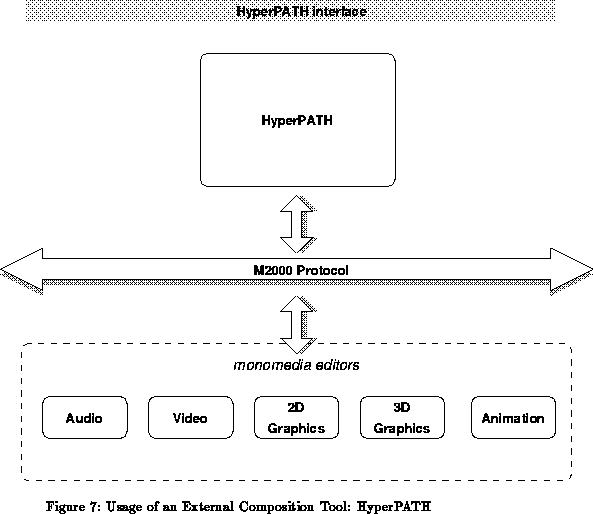

Previous: Hyperdocument Editing and Playback
Up: Application Architectures
Previous Page: Hyperdocument Editing and Playback
Next Page: Standardization
Previous: Hyperdocument Editing and Playback
Up: Application Architectures
Previous Page: Hyperdocument Editing and Playback
Next Page: Standardization
The application architectures presented in the preceding two sections
represent, in a way, the two extremes of a large palette. Intermediate
architectures, making use of only part of the full MADE functionality
are also possible and feasible. It is possible to create, for example, a
HyTime--like engine based on the MADE toolkit and some of the utilities
only (although these utilities may be distributed services rather then
linked to the HyTime engine); interactive modelling applications, or scientific
visualization applications, are also possible, which may use the
services of media editors, just as a full hypermedia authoring tool
does, but with a fundamentally different user--interface.

The application architecture shown on Figure 7 illustrates another possibility for an authoring environment. As said earlier, media editors, realized as MADE applications, may be used as independent servers, provided that the external communication protocol is understood by the ``wrapper'' around the MADE editor objects. In such a case, an ``external'' (ie, not closely MADE dependent) hyperdocument authoring tool may be used instead of the MADE composition utilities. The example used in Figure 7 is HyperPATH, formerly known as Multicard ([26]), a hypermedia editing tool developed by Bull. (The M2000 protocol referred to in the figure is the internal communication protocol defined for HyperPATH.)